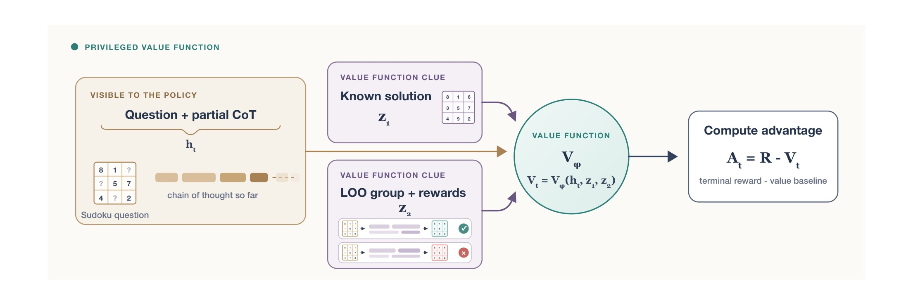
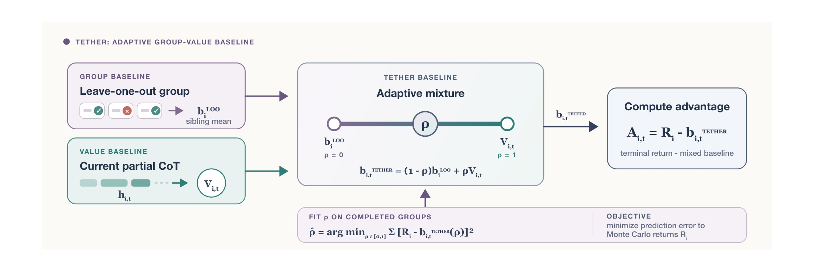
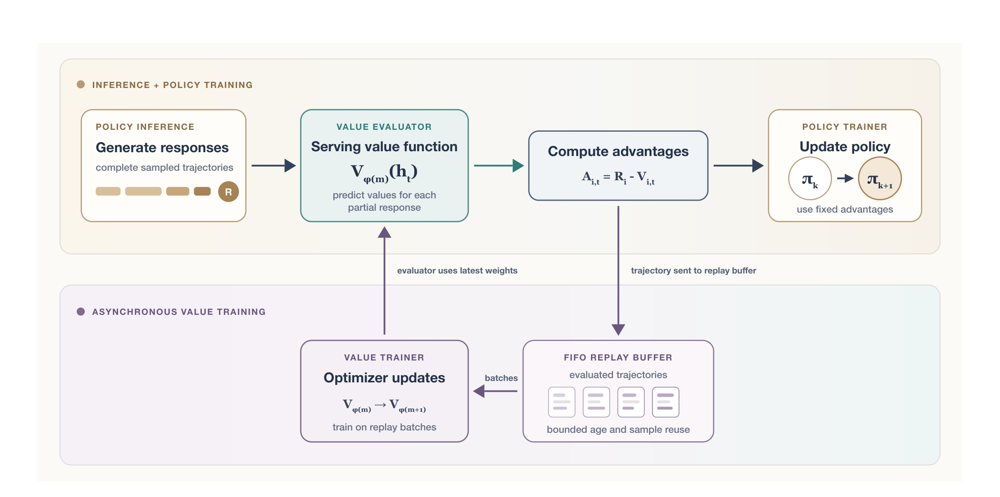
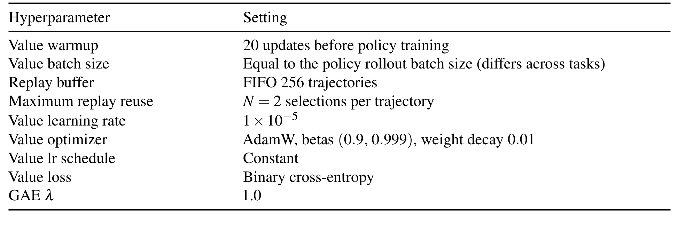
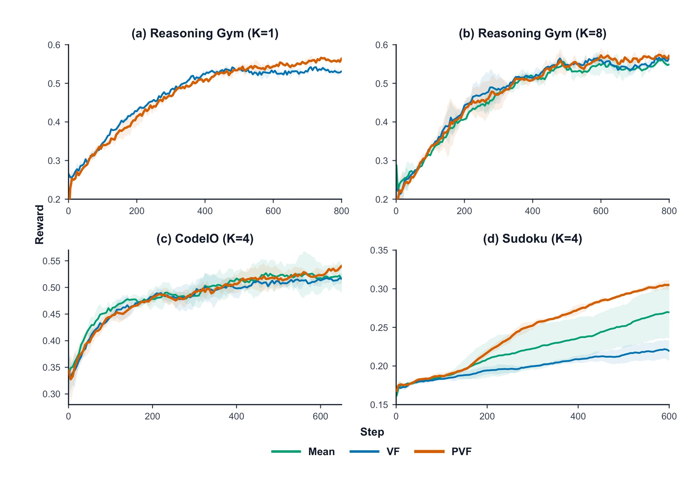
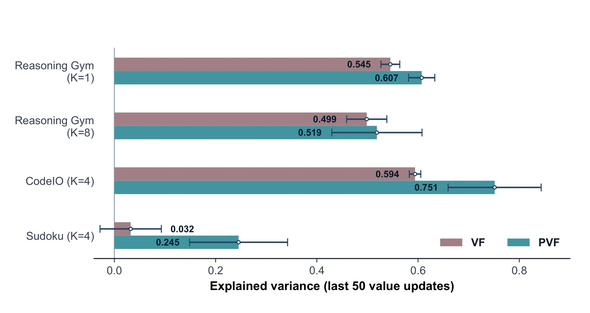
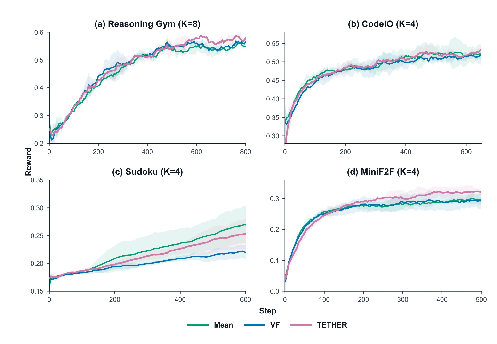
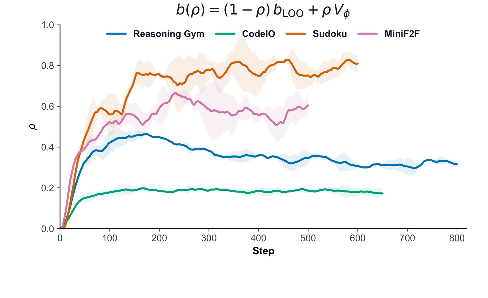
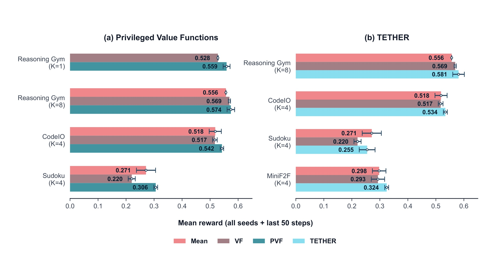
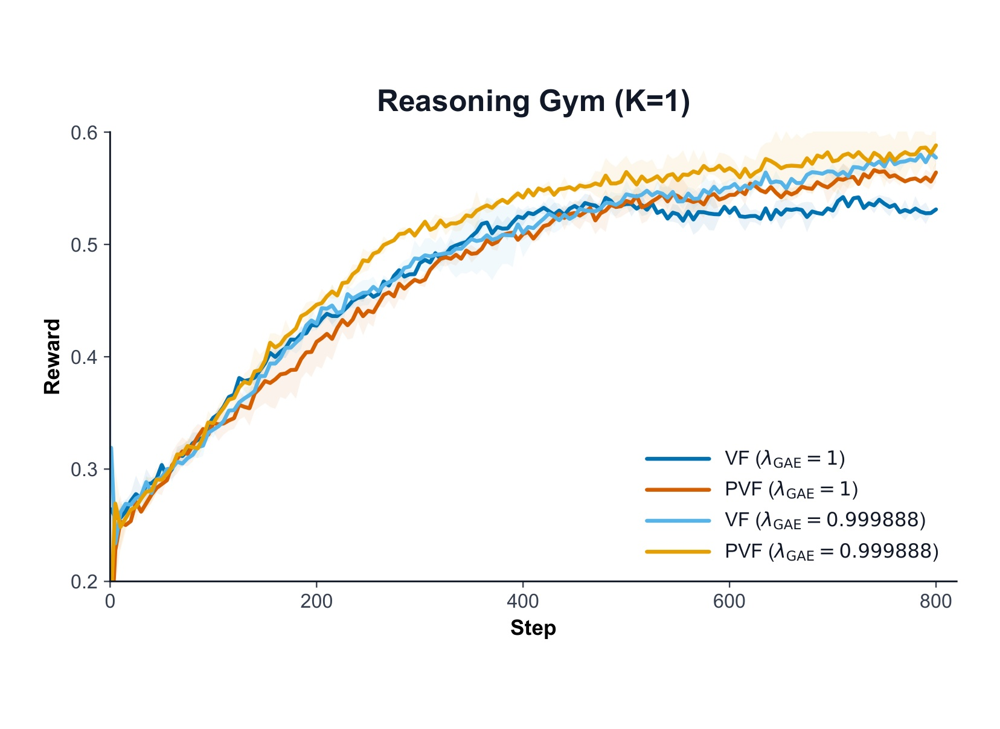

Le Critique：用特权价值函数重审 LLM 强化学习中的 critic
《Le Critique: Privileged Value Functions for LLM Reinforcement Learning》研究的是一个被 GRPO 浪潮暂时遮住的问题：在大模型强化学习中，学习式 value function 是否真的已经不值得使用。论文由 Siddarth Venkatraman、Matthieu Dinot 与 Laurence Aitchison 完成；第一作者的主机构为 Mistral AI，同时列有 Mila – Quebec AI Institute 与 Université de Montréal。论文入口为 arXiv:2608.16739，公开日期是 2026 年 8 月 17 日。配套实现已在 prime-values 公开，本轮已独立核验仓库可访问，README 明确描述异步 value evaluator、replay-buffer critic training 与 per-token GAE 接口。
作者没有简单地主张“把 PPO 的 critic 装回来”，而是拆成两条互补路线。Privileged Value Functions（PVF）让 critic 看到 policy 不能看到、但符合 baseline 可容许条件的训练期上下文；TETHER 则在 leave-one-out group baseline 与 token-level value baseline 之间，依据 critic 当前预测质量自适应插值。二者共同把算法问题落到同一条主线：怎样在不改变原始 policy objective 的前提下，让 control variate 更准确、更稳健，并值得额外的系统成本。
以 GRPO 为代表的组相对方法要为同一提示采样多条轨迹，只能给出序列级 credit；慢轨迹还会阻塞训练并放大异步 off-policy。学习式 value function 理论上能提供逐 token 优势且不依赖大组，但额外基础设施与 critic 拟合不良，使其在现代 LLM RL 中很难证明值得加入。
1. 背景和问题
1.1 方差缩减策略决定了现代 LLM RL 的分野
对终局奖励驱动的 LLM RL，一条采样轨迹往往只有最后的成功或失败信号。policy gradient 本身并不要求 critic；只要给每个 token 一个不反向传播的 advantage 乘子，就能更新生成概率。真正困难的是如何把高方差的终局回报变成稳定的优势估计。早期 RLHF 的 PPO 路线训练一个与 policy 规模接近、带 scalar value head 的模型，预测每个 prefix 的预期回报；GRPO、RLOO 一类路线则不训练 value model，而是对同一个 prompt 采多条回答，以组内平均或 leave-one-out 回报估计 prompt 难度。两类方法表面上是不同算法，论文将它们统一看成 baseline/control variate 的选择问题。
组相对方法之所以流行，有很现实的理由。它们省去一个大模型 critic 的参数、优化器状态、训练节点、服务副本以及权重同步链路；当 critic 没有充分预训练或跟不上变化中的 policy 时，组均值反而可能更可靠。可是它们把一条序列的同一个 advantage 重复给所有 token，无法区分哪一步推理提升了成功概率、哪一步把轨迹带偏。为了得到稳定的 prompt-level baseline，还必须为同一任务保留一个 group；如果某条回答特别长，整个同步 group 会被 straggler 拖住。异步系统虽能减少等待，却会让早生成的样本等到慢轨迹结束后才更新 policy，增加 policy lag 与 off-policyness。
学习式 value function 在理论上正好补这两个洞。它对每个 prefix 给出不同预期回报，因此能形成 token-level advantage；它也可以在 group size 为 1 时工作，不必等待同 prompt 的其他回答。问题在于，这些优势只有在 critic 预测足够准时才转化为更低的梯度方差。一个随机 value head 只经过少量 warmup，面对长链推理、中间环境交互或 verifier 稀疏奖励，很可能把噪声注入每个 token。由此形成论文要处理的第一层矛盾：value function 的统计上限更高，但训练早期和困难任务中的实际下限也更低。
这里还要区分两种常被混为一谈的方差。增大同 prompt 的 $K$ 一方面更准确地估计 prompt-level baseline，另一方面让同一任务的多条 policy-gradient contribution 可以平均；前者是 MEAN/LOO 特有收益，后者对同样保留 task group 的 value 方法也成立。对二元成功奖励，LOO mean 的方差是 $p(1-p)/(K-1)$。在最坏的 $p=0.5$ 情形，把 $K$ 从 8 翻倍到 16，baseline 标准误只从约 0.19 降到 0.13，却会把固定 batch 中独立任务数减半。更大的 group 也没有给第二个及后续 token 提供新的时间分辨率。作者正是据此认为，不能只靠继续扩大 group 消除 value function 在细粒度 credit 上的潜在优势。
1.2 “给 critic 更多信息”必须守住因果边界
很多推理任务在训练时存在 policy 不应直接使用、却能帮助判断中间状态的信息。例如 Sudoku 有完整解答，数学题有 reference answer，代码修复可能有 gold patch，verifier 还可能有 rubric。直觉上，把这些信息交给 critic，可以把“从 partial CoT 独立解题后再预测成功率”降成“比较当前轨迹是否朝已知正确终点推进”。但不能无条件把所有事后信息都塞进 baseline：如果 critic 看到了当前轨迹未来生成的 token、最终 reward 或依赖当前动作产生的后续 verifier feedback，baseline 就会与被更新 token 发生条件依赖，policy gradient 不再保持原期望。
论文因此把 privileged information 的价值与可容许性分开讨论。固定 reference solution、与当前轨迹独立采样的其他 sibling trajectories 及其回报可以使用；当前轨迹自身的未来状态和实现回报则不可以。这个边界也解释了 PVF 与 on-policy self-distillation 的差别。自蒸馏允许 teacher 看完整轨迹和回顾性反馈，再让 student 匹配 teacher 分布，但它加入了新的 distribution-matching objective，可能改变最优 policy，也可能让 teacher 依赖 student 无法从自身观测复现的信息。PVF 只把额外信息送进作为 control variate 的 critic；在可容许条件和本文使用的 Monte Carlo advantage 下，它改变的是梯度方差，不改变梯度期望。
1.3 论文的两项机制与证据边界
PVF 解决“critic 可不可以比 policy 看得更多”，TETHER 解决“critic 尚不可信时怎样不被它拖累”。前者利用更强条件信息提高 return prediction，后者从可靠但粗粒度的 LOO baseline 起步，随着 value model 变准再增加 token-level value 的权重。二者并不是互斥替代：TETHER 本身可以被看成一个极简 PVF，因为 sibling returns 是当前轨迹的 privileged information，LOO mean 是对它们的无训练压缩；CodeIO 实验中的 PVF 则让 critic 直接读取其他完整回答及其回报，学习比标量均值更灵活的聚合。
证据范围必须保持克制。实验覆盖 Reasoning Gym、CodeIO、Sudoku 和 MiniF2F，模型规模主要是 Qwen3-4B-Instruct-2507，MiniF2F 使用 Qwen3.5-4B；每个设置只有 2 或 3 个 seed。论文展示的是 reasoning-heavy、以二元终局奖励为主的小规模后训练，不等于所有 Agent、偏好建模或线上服务都会受益。value-backed run 还明确多出 value trainer 与 evaluator 节点，作者只在 VF 与 PVF/TETHER 内部匹配计算配置，并没有把 MEAN 与 value 路线做严格 compute-matched 比较。因此，本文最可信的结论是“在给定 value infrastructure 下，两项策略系统性改善普通 VF baseline”，而不是“critic 已全面优于 critic-free RL”。
此外，论文的 reward 是任务成功率式 raw reward，训练曲线做了 EMA 平滑，最终汇总则取最后 50 个 policy steps 的未平滑均值。读图时不能把某个末端尖峰当作最终性能，也不能跨任务比较绝对尺度；Reasoning Gym 的 0.58、Sudoku 的 0.30 与 MiniF2F 的 0.32 对应不同环境。合理的比较单位始终是同一任务、同一 policy 配置下的 baseline 差异，以及该差异是否和 critic 预测质量、混合系数动态相互一致。
2. 方法
2.1 从 group-relative baseline 到可容许的 token-level baseline
设同一 prompt 的第 $i$ 条轨迹终局回报为 $R_i$，group size 为 $K$。RLOO 不把当前轨迹自己的回报放进 baseline，而只平均另外 $K-1$ 条 sibling returns：
符号解释：$b_i^{\mathrm{LOO}}$ 是轨迹 $i$ 的 leave-one-out baseline；$R_j$ 是 sibling $j$ 的终局回报；$A_i^{\mathrm{LOO}}$ 是分配给轨迹 $i$ 的序列级优势；$K$ 是同 prompt 的采样条数。排除 $R_i$ 的意义不是形式洁癖，而是让 baseline 不依赖被更新轨迹自身的实现回报。GRPO 的 full-group mean 含 $R_i$，其优势与 RLOO 只差常数缩放，因此偏差在实践中常不严重；但 TETHER 若要把 group baseline 与 learned value 混合并保持清晰的无偏解释，就必须从 LOO 出发。进一步，论文把 baseline 的因果条件写成：
符号解释：$h_{i,t}$ 是生成第 $t$ 个 token 前的历史；$y_{i,t}$ 是当前 token；$z_{i,t}$ 是 baseline 额外读取的上下文；$b$ 是任意 baseline；$\pi_\theta$ 是待优化 policy；$\nabla_\theta\log\pi_\theta$ 是 score function。右侧条件独立是充分而非必要条件：给定历史后，额外上下文不能泄露当前 token 所决定的未来。固定答案或其他独立 rollout 可以满足，当前轨迹的 future token、最终 reward 和后续环境反馈通常不满足。ordinary value baseline 则对每个 prefix 预测同一条轨迹的 Monte Carlo return：
符号解释：$V_\phi$ 是参数为 $\phi$ 的 value model；$\mathcal{L}_V$ 是以终局回报为 target 的 value loss；$\widehat A_{i,t}$ 是 token-level advantage。本文实验对 policy advantage 和 value target 都使用 $\lambda=1$，等价于不做 bootstrapping 的 Monte Carlo 端点。这样不依赖不完美 critic 去构造短期 target，保留 policy gradient 的无偏性；代价是 return target 本身方差较高，critic 必须从大量 prefix 学会预测长程结局。
2.2 Privileged Value Functions：额外信息只进入 critic
符号解释：$V^\pi$ 是在当前 policy 下的真实条件期望；$V_\phi$ 是其近似；$z_{i,t}$ 可以是 reference solution、gold patch、verifier rubric，或与轨迹 $i$ 独立的 sibling responses/rewards；$\widehat A^{\mathrm{PVF}}_{i,t}$ 仍只作为 policy update 的乘子。核心设计是 policy 从不读取 $z_{i,t}$，因此 privileged context 提升的是 critic 的预测条件，而不是 actor 的可观测状态。 对最优条件期望，加入信息后的残差均方不劣于只看 history：
符号解释：两侧都是 return 相对最优预测器的均方残差；左侧多条件 $z_{i,t}$，理论上可解释的 return variance 只会增加。这个不等式不能直接保证有限参数的 $V_\phi$ 一定更好：上下文过长、表示形式难学或数据不足时，critic 可能忽略 clue，甚至因额外 token 增加优化难度。论文的实验价值正在于检验 Qwen 规模 critic 是否能把这一统计上限转成实际训练收益。

Figure 1 把 PVF 的边界画得很清楚。左侧只有 question 与 partial CoT 对 policy 可见；known solution $z_1$ 和 LOO group plus rewards $z_2$ 从独立支路进入 value function，最终给出 $V_t=V_\phi(h_t,z_1,z_2)$。policy trainer 接收到的是 $A_t=R-V_t$，而不是 privileged clue 本身。Sudoku 中完整解把“这个局部填格是否通向全局一致解”变成对照任务；CodeIO 没有任务专属 oracle，critic 改读另外三条回答及其回报，把 return prediction 转成 in-context aggregation。图中同时放两类 clue 并不意味着实验中总是二者齐用，而是展示统一接口：不同环境只需提供满足条件独立的 $z$。这也说明 PVF 的收益取决于 clue 是否既可容许又容易被 value model 消化。
2.3 TETHER：用上一批拟合的 rho 混合两类 baseline
普通 VF 的主要失败发生在训练早期：value head 只 warmup 20 次更新，token prediction 可能不如 group mean。TETHER 令 baseline 位于 LOO 与 value 的线段上：
符号解释：$V_{i,t}=V_\phi(h_{i,t})$ 是 ordinary token value；$b_i^{\mathrm{LOO}}$ 是 sibling mean；$\rho\in[0,1]$ 是对 value 端的权重；$\rho=0$ 恢复 RLOO，$\rho=1$ 恢复 pure VF。中间值既保留 critic 的 token variation，又用 group component 稀释 critic prediction error。TETHER 的目标不是单调把 $\rho$ 推到 1，而是找到当前任务和训练阶段中 return prediction 更准的位置。
每个批次先冻结上一批得到的 $\rho_{k-1}$ 计算 advantage，policy 使用固定 advantage 更新；随后才用当前已完成批次 $\mathcal{B}_k$ 拟合：
符号解释：$\widehat\rho_k$ 是当前批的 least-squares 最优混合；$\mathcal{B}_k$ 包含已经完成并获得终局回报的 token-prefix 样本；$b^{\mathrm{TETHER}}(\rho)$ 是候选混合 baseline。这个一维回归计算很便宜，但 当前批不能使用由自身回报拟合出的 $\widehat\rho_k$，否则 baseline 会重新依赖本批实现回报，破坏前面的可容许条件。
为降低小批估计噪声，论文再做跨批 EMA：
符号解释：$d$ 是 EMA decay，实验固定为 0.95；$\rho_k$ 是供下一批 $\mathcal{B}_{k+1}$ 使用的系数。初始化 $\rho_0=0$ 让训练从可靠的 LOO baseline 起步。附录进一步令 $A_B=R-B$、$\Delta=V-B$，给出 population optimum：
符号解释：$B$ 是 LOO baseline，$V$ 是 value prediction，$\Delta$ 是二者差异，$A_B$ 是 group residual；分子衡量朝 value 方向移动是否消除现有残差，分母按两端距离归一化。因为搜索区间含 $\rho=0$ 与 1，population least-squares optimum 的 Monte Carlo error 不会高于任一端点；若两类 baseline 误差互补，内部解可严格更好。但有限 batch 会过拟合，且它没有按 score norm 加权，所以不是理论上的最优 policy-gradient baseline。

Figure 2 将公式转成可执行顺序。上支路先把 sibling returns 压成 $b_i^{\mathrm{LOO}}$，下支路从 current partial CoT 产生 $V_{i,t}$；中间旋钮 $\rho$ 在线段上移动，右侧只输出 mixed baseline 与 advantage。底部的拟合发生在 completed groups 上，目标是 Monte Carlo return prediction error，而不是直接最大化下一步 reward。最容易忽略的是时间箭头：图示虽把拟合和混合画在同一框架，算法实现必须先用旧 $\rho$ 完成本批优势，再更新系数给下一批。它比 CodeIO 的 full-context PVF 表达力弱，因为先把 sibling information 压成一个均值；优点是无需让 critic 处理成组长文本，也不要求环境提供 oracle answer。
2.4 异步 value evaluation、FIFO replay 与 warmup
value function 的工程负担不是附带细节，而是论文论证的一部分。系统把 serving evaluator 与 value trainer 分成两个逻辑角色。policy inference 生成完整轨迹后，evaluator 用某个已发布版本 $V_{\phi(m)}$ 对每个 partial response 评分；系统先据此计算并冻结 advantage，再把已经评估的 trajectory 放入 FIFO replay buffer。value trainer 独立采 replay batch 做 optimizer update，发布单调递增版本，evaluator 在不中断服务的情况下采用较新权重。evaluate-before-train 保证某条轨迹不会先训练 critic、再被已经见过自己的 critic 回评，从数据顺序上维护 advantage 的无偏接口。

Figure 9 的上半环是时延敏感路径：generate responses、serving value function、compute advantages、update policy；下半环是更能容忍 stale data 的 value training。计算完 advantage 的 trajectory 才下沉到 FIFO buffer，trainer 可重复采样，更新后的权重再向上发布。论文支持 dedicated 和 colocated 两种 placement：dedicated 用独立 evaluator GPU，使 value inference 与 optimizer update 重叠，却额外常驻一份大模型；colocated 共用 trainer GPU，节省副本但训练与推理不能同时进行，长 optimizer step 会阻塞 advantage request，反过来增加 trajectory 到 policy update 的时间。实验取 replay buffer 256 条、每条最多复用 $N=2$ 次，value warmup 只有 20 updates。这一架构让 critic 不成为同步 barrier，却没有消除额外算力；是否值得部署最终要和 policy throughput、off-policy lag 及 reward 提升一起评估。
3. 实验结果
3.1 任务、baseline 与比较口径
PVF 部分比较 MEAN、ordinary VF 与 PVF。Reasoning Gym 使用 Qwen3-4B-Instruct-2507，训练 800 policy steps、batch size 128，分别测 $K=1$ 和 $K=8$，总序列上限 8192、completion 上限 6144，PVF 得到 ground-truth answer；$K=1$ 没有 MEAN baseline。CodeIO 同模型训练 650 steps，batch 128、$K=4$，输入/输出上限合计 12288 tokens，PVF 读取其他三条 group response 及回报。Sudoku 同模型训练 600 steps，batch 64、$K=4$，每轮填一个格，trajectory 最长 32768 tokens，PVF 读取 complete solved grid。Reasoning Gym 两个 seed，CodeIO 与 Sudoku 三个 seed。
TETHER 沿用相同的 RG、CodeIO、Sudoku 配置，省略无法构造 group 的 $K=1$ 情形，并新增 MiniF2F。MiniF2F 使用 Qwen3.5-4B、训练 500 steps、batch 128、$K=4$；每个定理最多三次 proof attempt，每次可生成 4096 tokens，并接收 compiler feedback。作者说明旧 Qwen3-4B-Instruct-2507 在该任务拿不到训练信号。所有 TETHER run 的 $d=0.95$。value-backed 方法使用 binary cross-entropy 训练连续的 Bernoulli success probability，而不是 MSE；这与二元 outcome reward 匹配，但作者只称早期实验略优，尚未系统消融 loss 形式。

Table 2 给出了 VF、PVF、TETHER 共用的 value 侧设置：20 次 warmup，value batch size 等于各任务 policy rollout batch size，FIFO buffer 为 256 trajectories，每条最多被选 $N=2$ 次；learning rate 为 $10^{-5}$，AdamW 的 beta 为 $(0.9,0.999)$、weight decay 0.01，constant schedule，binary cross-entropy loss，GAE $\lambda=1.0$。这些共同项使 VF 与 PVF/TETHER 的差异可较干净地归因于 conditioning 或 baseline mixture。算力比较则不同：RG 的 MEAN 用 2 个节点，VF/PVF/TETHER 用 4 个；CodeIO 为 3 对 5；Sudoku 和 MiniF2F 为 4 对 6，每个节点都是 $8\times$H200。作者匹配了推理 trajectory 数，却没有严格匹配总 FLOPs 或 accelerator-hours，因此不能从 reward 图单独推断总体训练效率更高。
实验还有两个容易影响复现的口径。第一，PVF 与 VF 的 critic allocation 完全相同，只有输入上下文不同；这使 PVF 对 VF 的增益比 PVF 对 MEAN 的增益更能说明机制。第二，MEAN 在 RG $K=8$、CodeIO/Sudoku $K=4$ 中享受 group rollout，而 RG $K=1$ 只能比较 VF 与 PVF；不能把 $K=1$ 的优势当作 group-relative 方法整体失败。论文也没有报告统一 validation benchmark，而以训练环境 raw reward 为主，因此结果更接近 optimizer 行为研究，不是独立 held-out 泛化评测。
3.2 PVF：主结果与 explained variance

Figure 3 的四个面板都把 PVF 画成橙线。RG $K=1$ 中 VF 与 PVF 前约 450 steps 接近，之后 VF 更早平台化，说明 privileged answer 的收益不是一开始就立刻显现；RG $K=8$ 的三条线较接近，PVF 只保留小幅优势，group information 已经降低了部分 prompt-level variance。CodeIO 更关键：PVF 没有任务专属正确答案，只看另外三条回答与回报，仍在中后期逐渐超过 MEAN 和 VF，支持 sibling trajectories 不只是一个均值，而能给 critic 提供可学习的比较上下文。Sudoku 的分离最明显，PVF 随 step 稳步升到约 0.30，VF 只到约 0.22；完整解显著降低了 critic 对全局一致性的隐式推理负担。误差带与 seed 数都较有限，趋势一致不等于方差已经被精确估计。
论文用 explained variance 检查“reward 提升是否伴随 value prediction 变准”：
符号解释：$\mathcal{B}$ 是 value batch；$\widehat V_{i,t}$ 是 critic 对 token prefix 的预测；分子是 advantage/residual 方差，分母是原始 return 方差。EV 为 1 表示完美解释，0 表示不比常数 baseline 更能解释 return；在本文 $\lambda_{\mathrm{GAE}}=1$ 时，残差就是 policy advantage，因此 EV 直接对应 critic 带来的 advantage variance reduction。

Figure 4 对最后 50 个 value updates 做 seed 聚合。RG $K=1$ 从 VF 的 0.545 提到 PVF 的 0.607；RG $K=8$ 只从 0.499 到 0.519；CodeIO 从 0.594 到 0.751；Sudoku 从 0.032 到 0.245。大小关系与 reward gap 基本一致：Sudoku 的 critic 原本几乎解释不了 return variance，完整解带来最大增量；RG $K=8$ 的增量最小，对应最终 reward 也只小幅提高。这个中间量证据比“PVF 曲线更高”更有说服力，因为它直接命中作者声称的 control-variate 机制。但 EV 仍是训练后窗口统计，不能证明每一次 policy update 的梯度协方差都严格下降，也不能排除更准确 value 与更好 policy 互相促进的动态反馈。
从任务结构看，PVF 的三种增益模式也不同。RG 的 reference answer 主要降低 single-turn 推理结局的不确定性；Sudoku 的 solved grid 在每轮动作后都能检查局部状态与全局解是否一致，因此对长 horizon 的每个 prefix 都可能有信息；CodeIO 的 sibling responses 则不提供确定 oracle，只给一组带 reward 的候选，使 critic 学习“当前 partial solution 与成功/失败样例的相似关系”。CodeIO 仍从 0.594 提升到 0.751，说明有用 privileged signal 不必等于标准答案。反过来，这也要求未来消融 sibling 文本和 sibling reward：否则无法判断模型是在比较推理结构，还是只把组内成功率当作更精细的 prompt baseline。
3.3 TETHER：主结果与 rho 动态

Figure 5 中 TETHER 为紫线。RG $K=8$ 在约 450 steps 后逐渐领先 MEAN/VF；CodeIO 三条线很近，TETHER 最终略高；Sudoku 中 TETHER 没追上 MEAN，却明显缓解 pure VF 的退化；MiniF2F 的 TETHER 在中后期持续高于两条 baseline。四个设置共同支持一个较窄但有用的主张：当现有 GRPO pipeline 已有可工作的 group baseline 时，TETHER 比直接切到 pure value baseline 更稳健。它不是保证超过 MEAN 的“免费升级”，因为 Sudoku 仍落后；它提供的是保留 group 安全网、同时利用 token-level critic 的低风险接口。训练曲线同样只有 2-3 seeds，MiniF2F 还更换了模型，跨任务绝对 reward 不宜横向比较。

Figure 6 显示所有任务都从 $\rho=0$ 起步，却没有一致收敛到 1。CodeIO 很快稳定在约 0.18，说明 sibling mean 已经很强，ordinary value 只提供少量补充；RG 先升到约 0.46，随后回落到约 0.32，反映 critic 相对 group 的质量会随 policy 分布变化；MiniF2F 在 0.5-0.65 区间波动；Sudoku 则大多停在 0.7-0.82，最信任 value 端。反直觉的是，Sudoku 的 pure VF 表现恰恰最弱。作者提出的解释是：早期未拟合 critic 若被 100% 使用，会先伤害 policy，坏 policy 又产生更差数据，形成复合效应；TETHER 先用 LOO 起步，等 critic 变准才提高权重。这里仍只是与动态一致的 hypothesis，没有通过重置 policy、延长 pretraining 或固定 $\rho$ 消融来建立因果。
还需注意 $\rho$ 优化的是 baseline 对 Monte Carlo return 的平方预测误差，不是直接最小化 policy gradient 的 trace covariance。真正的最优 control variate 会按每个 token 的 score norm $\|\nabla_\theta\log\pi_\theta\|^2$ 加权，而 TETHER 为了实现简单忽略了这一项。因此 Figure 6 的内部权重只能解释为“哪种 baseline 更会预测 return”，不能等价解释为“哪种混合一定给出最小参数更新噪声”。这项近似很可能在不同 token position 上不均匀，也正是论文提出 token-bucketed TETHER 作为未来工作的原因。
3.4 统一终点读数与 lambda 敏感性

Figure 7 用 raw reward 的最后 50 policy steps 均值统一比较。PVF 侧：RG $K=1$ 为 VF 0.528、PVF 0.559；RG $K=8$ 为 MEAN 0.556、VF 0.569、PVF 0.574；CodeIO 为 0.518、0.517、0.542；Sudoku 为 0.271、0.220、0.306。TETHER 侧：RG 为 0.556、0.569、0.581；CodeIO 为 0.518、0.517、0.534；Sudoku 为 0.271、0.220、0.255；MiniF2F 为 0.298、0.293、0.324。由此可准确区分三类结论：PVF 在本文四设置都最好；TETHER 在 RG、CodeIO、MiniF2F 超过或接近 MEAN；Sudoku 只把 VF 到 MEAN 的缺口从 0.051 缩到 0.016。误差棒按 seed mean 计算，而 seed 只有 2-3 个，不能把数值差直接当作充分显著性检验。
若把这些差值换成相对幅度，PVF 对 ordinary VF 的提升在 RG $K=1$ 约 5.9%，RG $K=8$ 不到 1%，CodeIO 约 4.8%，Sudoku 约 39%；TETHER 对 VF 则约为 2.1%、3.3%、15.9% 与 10.6%。相对数能突出 Sudoku 的 recovery，却也容易在低基数任务上放大观感，所以论文使用 raw reward 是更稳妥的主口径。更重要的是，PVF 与 TETHER 的“胜”并非同一含义：PVF 比 VF 多的是 context，TETHER 比 VF 多的是 group safeguard；只有前者内部比较能直接验证 privileged conditioning，后者内部比较验证 adaptive mixing。将两者都归结成“value function 更好”会丢掉实验设计的识别结构。
现有误差棒还不足以回答稳定性。RG 两 seed 中 0.574 与 0.569 的差距可能对 seed 选择敏感；CodeIO 的 MEAN 0.518 与 VF 0.517 几乎相同，TETHER 0.534 的优势虽方向清楚，置信区间仍需更多重复。Sudoku 的 PVF 0.306 与 VF 0.220 差距大，且 Figure 3 训练后半程持续分离，是最强证据；MiniF2F 的 TETHER 也有稳定曲线差，但只在 Qwen3.5-4B 上测。下一版若报告 paired seeds、bootstrap interval、每 step trajectory 数与 wall-clock，将更容易区分算法方差缩减和额外计算带来的数据吞吐差异。

Figure 8 在 RG $K=1$ 比较 $\lambda_{\mathrm{GAE}}=1$ 与 0.999888。后者看似只小了 $1.12\times10^{-4}$，却是按 8192-token horizon 选择，使首 token 仍保留约 40% 的无偏终局信号。曲线显示 VF 与 PVF 在 0.999888 下都高于各自 $\lambda=1$ 版本，PVF 仍保持优势。作者主实验坚持 $\lambda_{\mathrm{target}}=\lambda_{\mathrm{GAE}}=1$，是为了把分析限定在无偏 Monte Carlo advantage，而这张图说明工程最优点可能位于极窄的 near-one 区间。它同时暴露复现风险：粗粒度扫 0.95、0.99、1.0 会错过长序列真正敏感的尺度；若未来允许轻微 bias，需要分别调 value target 与 policy GAE 的 $\lambda$，并报告长度分布，而不是只给一个全局常数。
这里的 0.999888 也不能机械移植。它来自作者希望 8192 长度序列首 token 保留约 $0.4$ 权重的反推；Sudoku 最长 32768 tokens，MiniF2F 又由多次 4096-token attempt 组成，相同 $\lambda$ 对早期 token 的衰减完全不同。更合理的复现方式是先选定“最大或典型 horizon 上首 token 保留多少 terminal signal”，再由长度求 $\lambda$，同时对短轨迹检查 bootstrapping bias。若不同样本长度差异很大，按 position bucket 或 trajectory length 自适应设置，可能比一个全局标量更符合论文对 token-level credit 的出发点。
整体上，实验证据呈现了连贯链条：PVF 提升 EV，并在 EV 增量最大的环境获得最大 reward gap；TETHER 的 $\rho$ 留在内部，说明 group 与 value error 确实具有互补性；两类方法都比 ordinary VF 稳定。但证据尚未回答三个关键问题：更长、更充分的 value pretraining 是否会让 ordinary VF 追上；同等 accelerator-hour 下 value 路线是否仍占优；在非二元奖励、开放式 Agent 与更大模型上，privileged context 的可容许边界和表示负担是否相同。
尤其需要补一个“只换算法、不增加轨迹”的 wall-clock 对照：同步 group 的 straggler 时间、异步 evaluator 等待时间和 critic optimizer 占用应统一记账。否则 group size 减小带来的吞吐收益与新增 value 节点的成本无法放进同一张效率曲线，论文关于减少 off-policyness 的系统动机也还停留在合理推断，而非直接测量。
4. 总结
4.1 我的判断
Le Critique 最有价值的地方不是“证明 critic 回归”，而是把 value function 的讨论从二选一改成可拆解的设计空间。PVF 说明 critic 不必和 policy 拥有完全相同的观测，只要额外信息满足 baseline admissibility，就能在不改 policy optimum 的情况下改善 control variate；TETHER 说明 group baseline 与 value baseline 也不必硬切换，可以把 critic 的可信度显式变成一个随训练更新的混合系数。实验从 reward、explained variance、$\rho$ 动态三个层次互相印证，尤其 CodeIO 用非任务专属 sibling context 获益，表明 PVF 不局限于有标准答案的数学环境。
对工程系统而言，最值得迁移的是接口而非某个固定数值。已有 GRPO/RLOO pipeline 可以先实现 TETHER：复用 group return、增加 token value、用上一批拟合的系数混合，逐步评估 critic 是否值得常驻；有 oracle answer、gold patch 或独立 verifier rubric 的环境再尝试 PVF。推荐、搜索或广告的序列决策若存在训练期完整会话结果、反事实模拟状态或其他独立候选反馈，也可能借鉴 asymmetric critic，但必须逐项验证这些信息是否由当前动作产生，不能把事后点击、转化或未来曝光直接当作可容许 baseline 输入。
更具体地说，论文给出了一种渐进部署顺序：先在现有 group pipeline 旁路训练 evaluator，只记录 EV 与 latency，不参与 policy；再以很小或自适应 $\rho$ 接入 TETHER，观察 reward、off-policy lag 与吞吐；最后才在信息来源清楚的任务上加入 PVF context。这样能把“critic 学不准”“系统服务太慢”“privileged clue 无效”三类失败分开，而不是一次更换整个 RL stack 后只看总 reward。
这使论文更像一份“如何重新评估 critic”的研究议程，而非一套已经封闭的最佳实践；它提供了可审计的统计条件、系统接口和失败信号，真正的结论仍需在更大规模与等算力实验中完成。
4.2 局限与风险
- 规模与任务范围有限。 主模型约 4B，任务集中在程序化推理、代码 I/O、Sudoku 与形式化数学；结论不能直接外推到长程浏览 Agent、多轮工具调用、偏好奖励或百亿参数模型。2. seed 太少。 每个设置只有 2-3 个 seed，误差棒不足以稳定估计尾部差异，Figure 7 的小幅领先需要更多重复与正式显著性分析。3. 算力没有对齐。 value-backed run 多一个 trainer 和一个 evaluator 节点；reward 更高不等于 sample、FLOP 或 wall-clock 更高效。4. privileged context 有表示与安全边界。 理论保证针对最优条件期望；有限 critic 可能被长上下文拖累，而错误使用本轨迹未来反馈会直接引入 policy-gradient bias。5. TETHER 的有限样本保证较弱。 population optimum 不劣于两个端点，但 batch-wise $\rho$ 可能过拟合、滞后于变化中的 policy，EMA decay 0.95 也未系统消融。6. value loss 与 pretraining 尚未展开。 binary cross-entropy、20-step warmup、replay reuse $N=2$ 都可能强烈影响 ordinary VF 的下限，论文没有给完整二维消融。
4.3 后续跟进
第一，做 compute-matched 复现：固定 accelerator-hours 或 wall-clock，分别测 MEAN、VF、PVF、TETHER 的 reward、throughput、policy lag、value utilization 与 peak memory，才能判断 extra critic 是否经济。第二，延长并多样化 value pretraining，同时报告 EV 随训练的变化，检验 TETHER 的优势究竟来自“保护 early critic”还是长期 error complementarity。第三，对 privileged context 做逐项因果审计和消融：reference answer、sibling text、sibling reward、rubric 分开加入，并测上下文长度与泄漏风险。第四，沿论文未来方向实现 token-bucketed $\rho_{m(t)}$，检查长轨迹前后位置是否需要不同 group/value 权重。第五，在更大模型、连续 reward、真实 Agent harness 与推荐序列决策中复测，并把 $\lambda_{\mathrm{GAE}}$、$\lambda_{\mathrm{target}}$ 按实际长度尺度做 near-one 精细扫描。